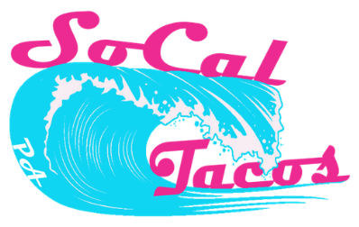

Can Drink$1-$3
Cold canned drink.

Large print counter menu
Cold canned drink.
Fresh handmade agua frescas and homemade lemonade.
Breakfast taco from the SoCal Tacos breakfast menu.
Breakfast burrito from the SoCal Tacos breakfast menu.
Plain or loaded quesadilla. Choose meat at no extra charge.
Choose one taco or a three taco plate.
Choose one taco or a three taco plate.
Choose one taco or a three taco plate.
Choose one taco or a three taco plate.
Choose one taco or a three taco plate.
Choose one taco or a three taco plate.
Choose one taco or a three taco plate.
Choose one taco or a three taco plate.
Choose one taco or a three taco plate.
Choose one taco or a three taco plate.
Three small tacos. Choose chicken, pork, chorizo, ground beef, or steak.
Choose one taco or a three taco plate.
SoCal-style LA dog.
Comes with animal fries or plain fries. Full size has 3 patties, avocado, lettuce, tomato, grilled onions, and cheese.
Rice, beans, toppings, guac, and meat priced like large burritos.
Choose JR, small, or large burrito with your meat.
Crispy fries topped with carne asada, cheese, pico, salsa, sour cream, and guac. Choose meat pricing like large burritos.
Doritos, cheese, pico, and guac with your choice of meat.
Street corn from the SoCal Tacos menu.
Side of rice and beans.
Plain crispy fries.
Fresh, creamy guacamole made with real avocados, lime, and a pinch of spice.